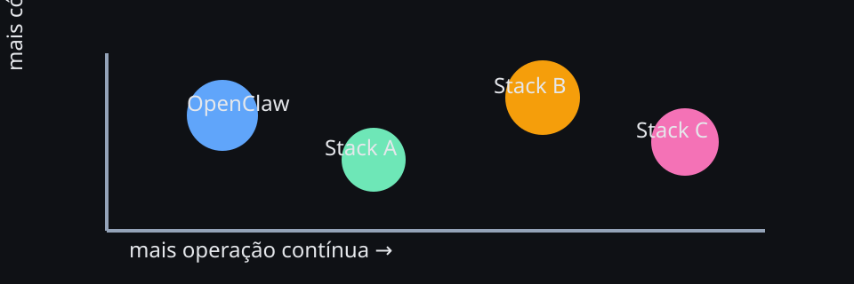

Escolher stack agentic cedo demais costuma produzir arquitetura bonita no papel e cansativa na operação. Compare pela forma de uso em produção, não pelo marketing.
Capítulo 34 de 35AvançadoStacks · times · governança
Comparando frameworks e stacks agentic
OpenClaw não precisa ganhar toda comparação para ser a escolha certa. A pergunta útil não é “qual stack é mais poderosa?”, e sim qual stack simplifica o problema dominante do seu cenário: rotina em canais, backend orientado a código, RAG pesado, automação operacional, coordenação entre times ou produto embarcado em uma aplicação maior.
Este capítulo fecha o livro com uma comparação honesta entre OpenClaw e outras famílias de stacks agentic. O objetivo é evitar dois extremos igualmente ruins: escolher pela demo mais bonita ou rejeitar uma ferramenta porque ela não tenta resolver tudo sozinha.
Diagrama — stacks agentic em contexto

Compare forma de operação, não slogan
Ferramentas agentic costumam parecer parecidas no discurso e muito diferentes no dia a dia. O ponto central é entender qual parte da pilha cada uma quer tornar fácil.
Eixo
Pergunta certa
superfície principal
a stack nasce para canais, sessões e rotina ou para código, workflow e produto embutido?
estado e contexto
workspace e memória são parte natural da operação ou algo que você monta à mão?
governança
aprovação, isolamento, políticas e ownership ficam explícitos ou exigem muita cola customizada?
custo previsível
é fácil separar domínios, tiers e fluxos caros ou tudo tende a virar um backend único e opaco?
manutenção
quem sustenta isso: operador, dev de plataforma, squad de produto ou time de MLOps?
Heurística: a melhor stack quase sempre é a que reduz a quantidade de decisões invisíveis. Se o time precisa inventar convenção para tudo, o custo real aparece depois.
Onde OpenClaw brilha — e onde não precisa brilhar
Brilha mais
Assistentes operacionais com presença contínua, canais, sessão, workspace, memória, cron, heartbeat, tooling e rotina legível.
Brilha menos
Produtos fortemente centrados em backend customizado, pipelines de dados pesados ou aplicações cuja principal superfície é código e API interna.
Combina bem
OpenClaw como camada operacional e outra stack como motor especializado de RAG, workflow programático ou execução dentro do produto.
Esse encaixe conversa com capítulos anteriores: o capítulo 31 trata fronteiras e ownership; o capítulo 33 mostra por que separar fluxos também ajuda custo e previsibilidade.
Quatro famílias de stack que vale distinguir
Família
Enfoque principal
Melhor encaixe
Risco comum
OpenClaw e stacks orientadas à operação
canais, agentes persistentes, workspace, automação e presença contínua
forçar uso como se fosse apenas biblioteca de backend
frameworks orientados a código
grafo de execução, agentes em código, ferramentas e controle programático
apps sob medida, experimentação por engenharia, integração profunda com produto
subestimar o trabalho de UX, governança e operação humana
stacks orientadas a RAG e dados
indexação, retrieval, pipelines de documentos e grounding
busca corporativa, knowledge base, copilotos sobre acervos grandes
tratar todo problema como se fosse principalmente retrieval
plataformas prontas de app/copilot
velocidade de entrega com menos infraestrutura própria
MVPs, times pequenos, cenários mais padronizados
lock-in, limite de customização e visibilidade reduzida do que acontece
Matriz comparativa honesta
Critério
OpenClaw
Stacks orientadas a código
Stacks orientadas a RAG
superfície de interação
forte em canais, sessões, persona e rotina
forte em API, workers, pipelines e apps
forte em busca, grounding e documentos
workspace e memória operacional
nativos ao modelo mental
geralmente montados via convenções próprias
frequente foco em acervo, não em rotina do agente
governança para times
boa quando o uso é explicitamente operacional
depende muito de disciplina de engenharia
boa para governança de conteúdo, nem sempre para conversação contínua
velocidade para produto embutido
média
alta
média a alta quando o núcleo é busca
custo previsível por domínio
forte ao separar canais, agentes e fluxos
pode ser ótimo, mas exige desenho e telemetria próprios
depende do volume de indexação, refresh e fan-out de retrieval
melhor encaixe
assistente com presença contínua e operação diária
aplicação agentic customizada
copiloto sobre base documental grande
Comparando pelo perfil do time
A mesma stack parece ótima ou péssima dependendo de quem vai mantê-la.
Time operacional
Se a prioridade é presença em canais, rotina, comandos práticos, memória e automações recorrentes, OpenClaw tende a reduzir atrito mais cedo.
Time de produto/engenharia
Se a prioridade é compor agentes dentro de um app, backend e serviços proprietários, stacks orientadas a código podem ter encaixe melhor como núcleo.
Time de conhecimento
Se o principal desafio é retrieval, qualidade de acervo, ranking e grounding, uma stack centrada em RAG pode merecer protagonismo.
Pergunta prática: seu gargalo hoje é presença operacional, programabilidade ou acesso confiável ao conhecimento? Escolha a stack que resolve o gargalo real, não a que parece mais completa em tese.
OpenClaw vs stacks de código: governança e ownership
Frameworks orientados a código costumam oferecer grande liberdade. Isso é excelente quando o time sabe exatamente o que quer construir. O preço é que governança, UX e manutenção viram decisão de arquitetura, não presente do produto.
Pergunta
OpenClaw tende a responder melhor quando...
Stack de código tende a responder melhor quando...
quem fala com o usuário?
há canais, persona e política de resposta contínua
a interação está embutida no app e controlada por você
quem mantém o contexto?
workspace e memória são parte central da rotina
o produto já tem storage, eventos e estado próprios
quem governa mudanças?
o fluxo é operacional e precisa de regras claras por canal/agente
o time já possui pipelines maduros de deploy, eval e observabilidade
quem paga pelo erro?
o custo maior é ruído operacional, resposta indevida ou rotina opaca
o custo maior é flexibilidade limitada no backend
OpenClaw vs stacks de RAG: quando conhecimento é o centro
Se o seu caso de uso vive ou morre pela qualidade do retrieval, o núcleo da pilha talvez não deva ser a mesma ferramenta que resolve canais, persona e rotina. Muitas vezes o desenho mais saudável é:
Padrão de composição em camadas
Camada de operação: OpenClaw recebe, conversa, delega, agenda e guarda contexto operacional.
Camada de conhecimento: outra stack indexa, busca, reranqueia e devolve grounding.
Camada de decisão: o agente combina contexto do canal, política e dados recuperados antes de responder.
Camada de auditoria: logs, custo e ownership ficam visíveis por domínio.
Esse desenho evita um erro comum: tentar transformar uma stack de RAG em sistema completo de operação humana ou, no extremo oposto, forçar OpenClaw a ser a única peça de uma arquitetura pesada de conhecimento.
Comparar também pelo custo de coordenação
O custo real da stack não é só token. É também o quanto custa explicar a ferramenta para o time, definir ownership, revisar comportamento, depurar fluxo e manter previsibilidade.
Custo invisível
Sinal em OpenClaw
Sinal em outras stacks
coordenação entre squads
aparece quando canais, perfis e agentes não têm fronteiras claras
aparece quando o mesmo backend serve casos demais sem recorte operacional
governança de mudança
aparece quando policies, memória e tools mudam sem changelog
aparece quando prompts, grafo e toolchain vivem espalhados em código
previsibilidade de custo
melhora ao separar domínios e tiers por agente
depende de observabilidade e telemetria feitas pelo próprio time
treinamento do time
mais leve para operação conversacional
mais leve para engenharia acostumada com SDK e backend
Regra de bolso: se sua comparação ignora quem vai manter a stack por 12 meses, ela ainda está incompleta.
Sinais de que OpenClaw provavelmente é a escolha certa
você precisa que o agente exista como presença contínua em um ou mais canais
workspace, memória e rotinas recorrentes são parte da proposta de valor
o time quer separar agentes por domínio, risco, squad ou tipo de fluxo
há necessidade real de cron, heartbeat, delegação e operação diária sem reconstruir tudo
o problema principal é operacional e humano, não só orquestração em código
Sinais de que outra stack deve liderar — com ou sem OpenClaw junto
o agente é apenas um componente interno de um produto maior sem presença própria em canais
o time já tem backend, storage, observabilidade e deploy bem estabelecidos e quer controle programático fino
retrieval sobre grande acervo documental é o problema dominante e o restante é secundário
a principal vantagem competitiva está na lógica de execução customizada, não na rotina conversacional
o time tolera mais engenharia em troca de máxima flexibilidade arquitetural
Scorecard rápido para decidir sem teatro
Receita — escolha pragmática de stack
Liste os 3 cenários mais importantes hoje, não os sonhos para daqui a um ano.
Dê nota de 1 a 5 para cada cenário em cinco eixos: operação contínua, programabilidade, governança, custo previsível e conhecimento/RAG.
Marque qual stack simplifica o eixo dominante sem piorar demais os outros.
Decida se precisa de uma stack líder ou de composição em camadas.
Faça um piloto curto com métrica explícita: tempo para entregar, retrabalho, custo por fluxo e legibilidade operacional.
Exercício: descreva seu caso em uma frase sem citar ferramentas. Depois descreva o gargalo em outra frase. Se a ferramenta escolhida não simplifica esse gargalo, reabra a decisão.
Exemplo de leitura por cenário
Cenário
Stack líder provável
Por quê
assistente interno em Telegram/Discord com memória e rotina
OpenClaw
canais, presença contínua, workspace e automação são centrais
copiloto embutido em SaaS próprio com lógica customizada
stack orientada a código
o produto e o backend são a superfície principal
busca corporativa sobre milhares de documentos
stack orientada a RAG
retrieval, indexação e grounding governam a qualidade
assistente operacional que consulta base documental complexa
OpenClaw + stack de RAG
uma resolve a rotina; a outra resolve o conhecimento especializado
Troubleshooting de decisão de stack
Sintoma
Hipótese provável
Ação recomendada
toda comparação vira debate abstrato
casos de uso e dono operacional não foram definidos
volte para 3 cenários concretos e atribua owner a cada um
a stack parece poderosa, mas o time não consegue operar
o custo de coordenação foi ignorado
meça onboarding, retrabalho e clareza de ownership
há liberdade demais e consistência de menos
framework de código sem convenções mínimas
crie padrões de prompt, tool design, eval e deploy antes de escalar
há rotina conversacional, mas retrieval continua ruim
a camada de conhecimento está fraca
compose OpenClaw com stack ou serviço focado em RAG
o custo cresce sem explicação
domínios, squads ou fluxos não estão separados
aplique as heurísticas do capítulo 33 e recorte agentes por domínio
FAQ rápido
Pergunta
Resposta curta
OpenClaw substitui LangGraph, AutoGen, CrewAI e afins?
Nem sempre. Muitas vezes ele substitui parte da pilha e convive com outra ferramenta em composição saudável.
Escolho uma única stack para tudo?
Só se isso realmente simplificar. Em muitos cenários, uma stack líder com componentes especializados é melhor.
Como evitar lock-in mental?
Compare pelo problema dominante, pelo time que mantém e pelo custo de coordenação. Marketing some rápido; manutenção fica.
Quando migrar de uma stack para outra?
Quando o gargalo principal mudou: de operação para produto, de backend para canais, ou de conversa para knowledge retrieval.